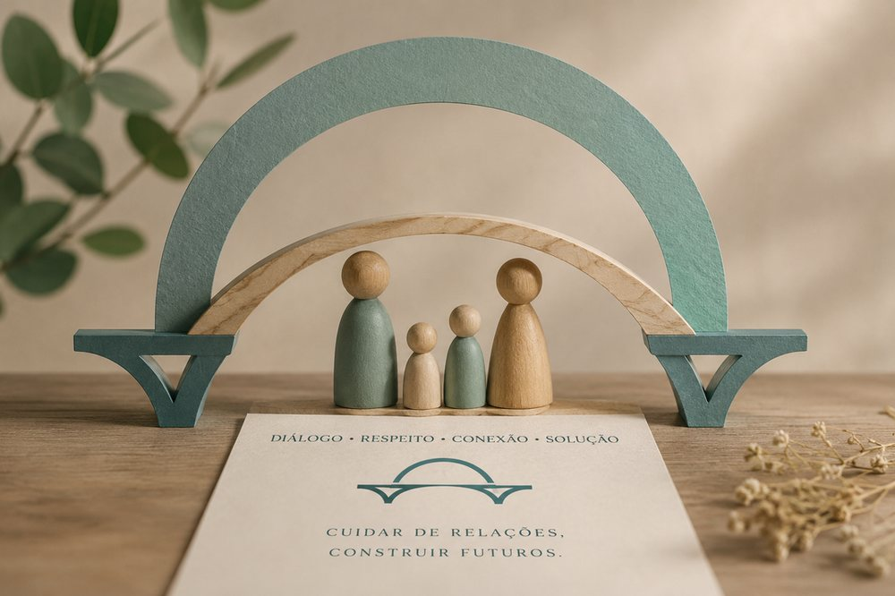

Conflitos Familiares
Divórcio, partilha de bens, inventário, guarda e convivência, planos de parentalidade, planos de gestão intergeracional, alimentos, reconhecimento e dissolução de união estável.
Compreendo o conflito não como um problema a ser resolvido, mas como parte das relações humanas — que, bem conduzido, pode se tornar uma oportunidade de reorganizar vínculos e construir soluções mais conscientes e duradouras.
“Diálogo, respeito, conexão, solução.”
Acredito que a resolução de um conflito exige um olhar que vá além da aplicação da lei — integrando conhecimento jurídico, escuta qualificada e diálogo.
Como Advogada Colaborativa e Mediadora, dedico minha atuação ao gerenciamento de conflitos familiares, unindo a experiência jurídica à formação especializada em mediação, parentalidade e conflitos intergeracionais.
Meu objetivo é oferecer um espaço seguro, imparcial e acolhedor para que as famílias encontrem, por meio do diálogo, soluções construídas em conjunto — respeitando a singularidade de cada história e promovendo decisões sustentáveis para o futuro.
Cada tipo de conflito pede uma escuta específica — mas todos podem ser trabalhados dentro de um mesmo espaço de diálogo estruturado.
Divórcio, partilha de bens, inventário, guarda e convivência, planos de parentalidade, planos de gestão intergeracional, alimentos, reconhecimento e dissolução de união estável.
Acordos entre acionistas/quotistas, dissolução, propriedade intelectual, confidencialidade, renegociação e interpretação de cláusulas contratuais.
Locação, condomínio, rescisão ou inadimplência, renegociação de termos contratuais.
Bullying, aspectos pedagógicos e contratuais entre famílias e instituições de ensino.

Você pode esperar um espaço seguro e confidencial, no qual todas as partes têm voz e são escutadas com respeito. Eu não decido o conflito — conduzo o diálogo de forma equilibrada, ajudando a identificar interesses, sentimentos e necessidades por trás das posições.
O objetivo é criar cooperação, onde as próprias partes constroem juntas soluções viáveis e sustentáveis, preservando ou ressignificando os vínculos existentes.
Prospectivo — foco na construção de futuro.
Foco em soluções e interesses, não em avaliar culpados.
Abordagem pluralista e linguagem respeitosa.
Regras simplificadas e participação ativa das partes.
Advogados direcionados a contribuir com soluções negociadas.
Um processo humanizado, do início ao fim.
Cada família possui uma história, uma dinâmica e necessidades próprias. Por isso, o processo é conduzido de forma estruturada, respeitando o tempo necessário para que todos compreendam o procedimento, organizem suas ideias e participem das decisões de maneira consciente. A experiência demonstra que decisões importantes são tomadas com mais serenidade quando as pessoas compreendem o processo antes de revisitar o conflito.
Apresentação da mediadora, explicação do procedimento, esclarecimento de dúvidas e avaliação sobre a adequação da mediação ao caso. Os fatos do conflito não são discutidos nesta etapa.
Assinatura do Termo de Mediação, que estabelece regras, princípios de atuação, deveres das partes e confidencialidade. Em seguida, são enviados os questionários para o Diagnóstico do Conflito.
Encontros individuais para compreender a dinâmica familiar, identificar interesses e necessidades, e preparar cada participante para o diálogo conjunto.
Início das sessões conjuntas, construindo um ambiente seguro de diálogo para que as próprias partes desenvolvam soluções que atendam aos interesses de todos.
Responda dez perguntas rápidas e receba uma orientação inicial, personalizada para a sua situação, sobre como podemos seguir juntos.
Orientação inicial e informativa, sem caráter de aconselhamento jurídico. Suas respostas não são armazenadas.
A reunião de apresentação é o primeiro passo para conhecer o processo e decidir com consciência.
Vamos entender juntas se a mediação é o caminho certo para o seu momento.
Agendar pelo WhatsApp Enviar e-mail